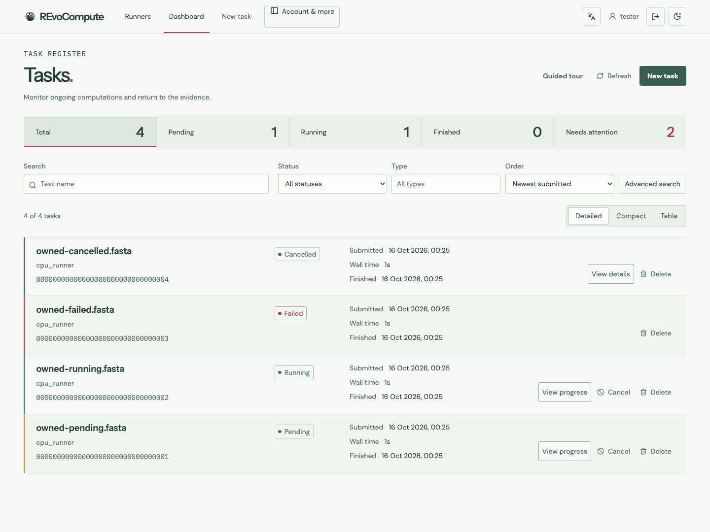
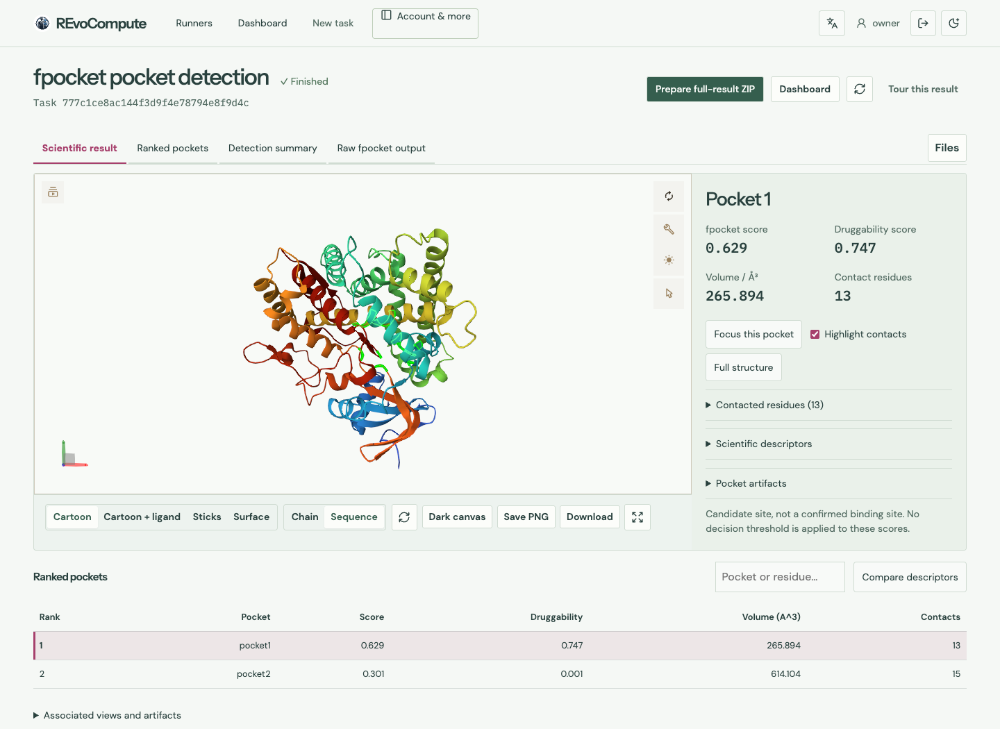
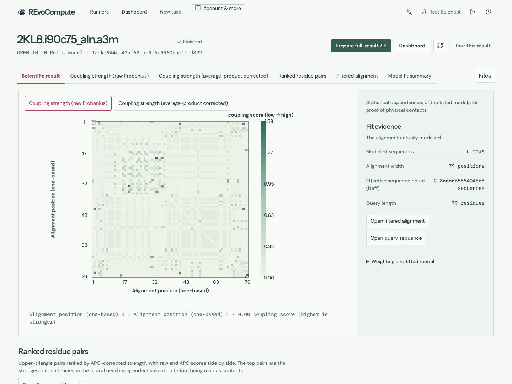

Daylight Bench — approved references and productionDaylight Bench · fidelity correction in Draft PR #88
Approved reference → corrected production. First four pairs use matching viewport sizes. Scientific captures use authentic retained data, without new compute execution.
Catalog and Fleet have no dedicated approved prototype: their left images are the previous production implementation. Account / operational API data is synthetic.
Dashboard
Approved prototype · 1440 × 1080 Real Flask auth/API · synthetic owned Tasks
Real Flask auth/API · synthetic owned Tasks
fpocket
Approved Study A · 1440 × 1050 Production frontend / Mol* · SAME retained 1SUO run
Production frontend / Mol* · SAME retained 1SUO run
GREMLIN
Approved prototype · 1440 × 1080 Production frontend · SAME 2KL8 seed-0 scientific replay
Production frontend · SAME 2KL8 seed-0 scientific replay